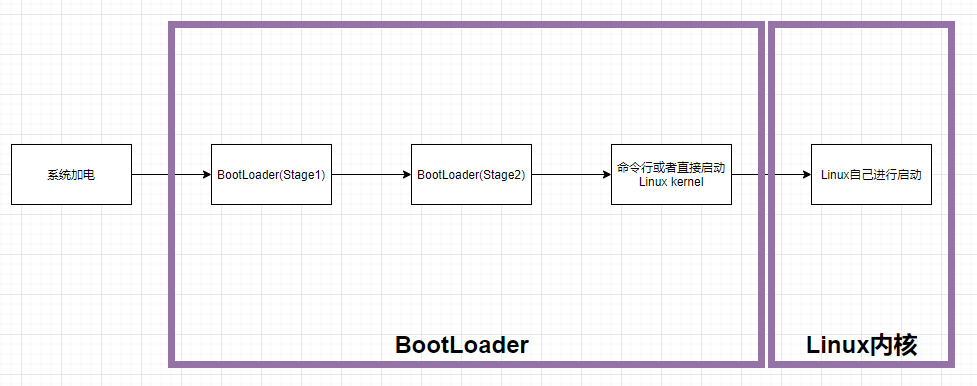
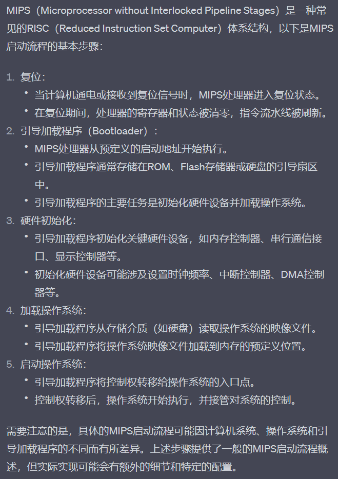
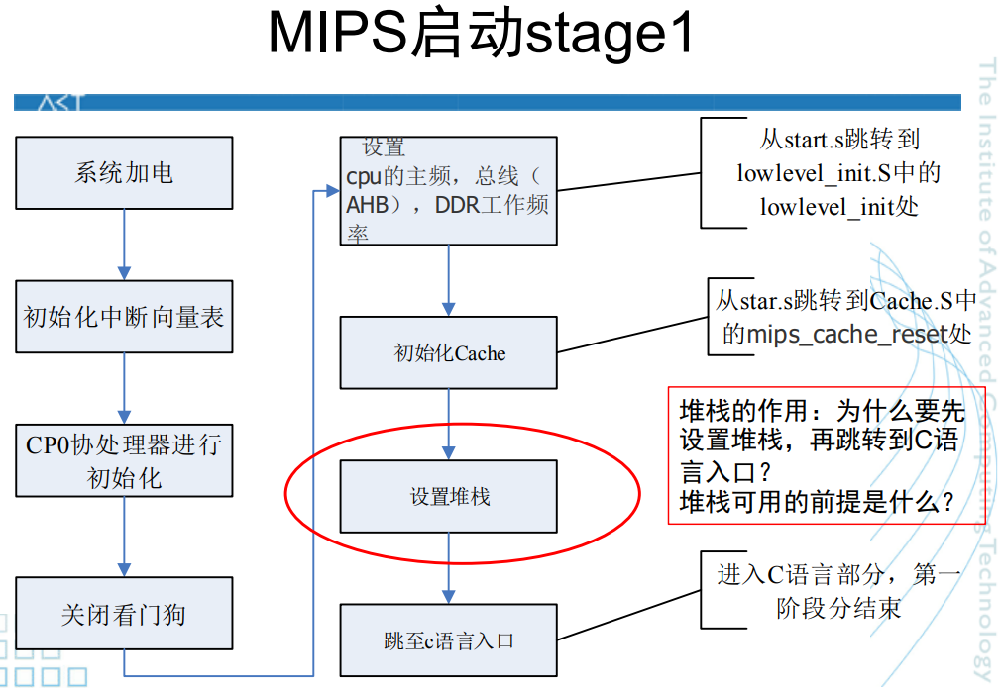
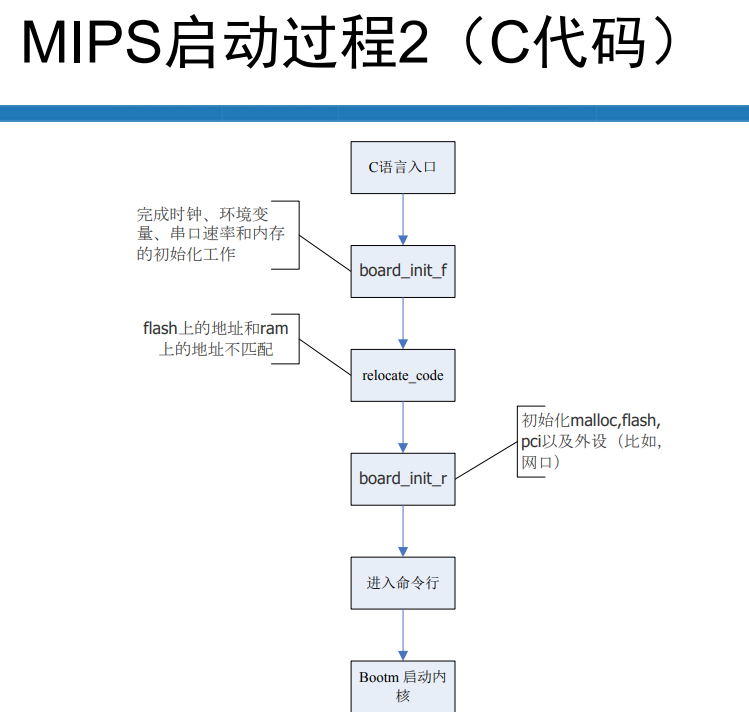
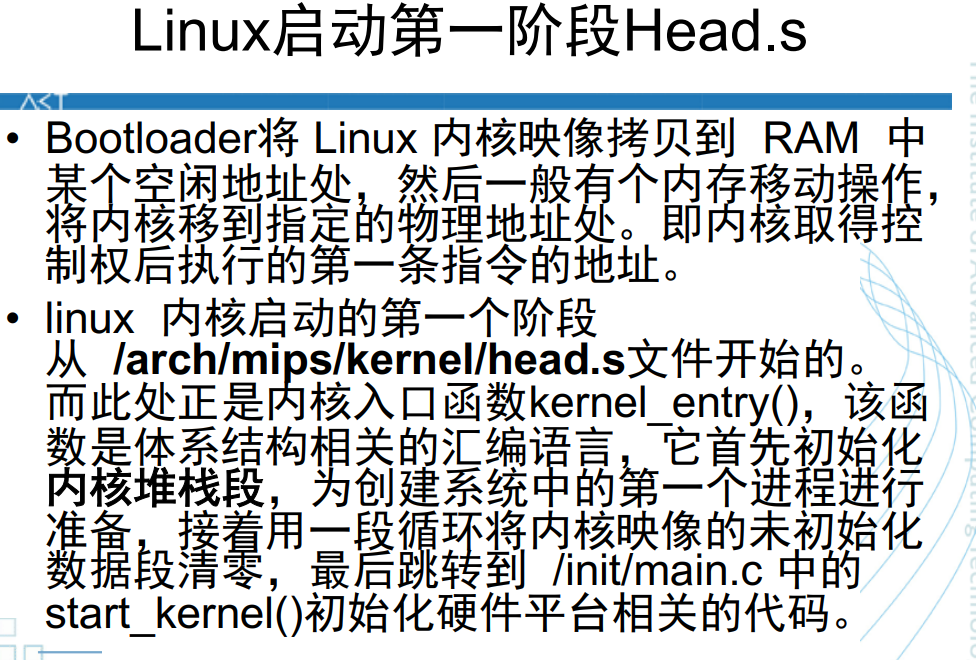
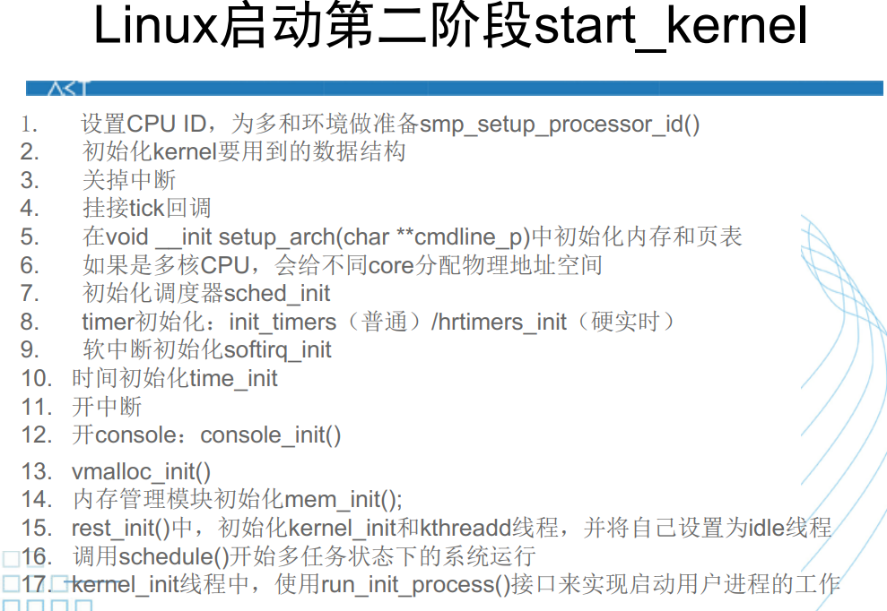
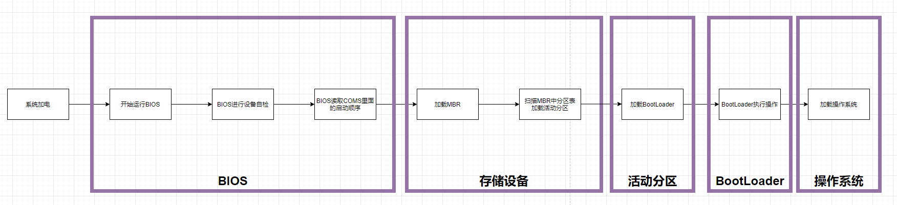
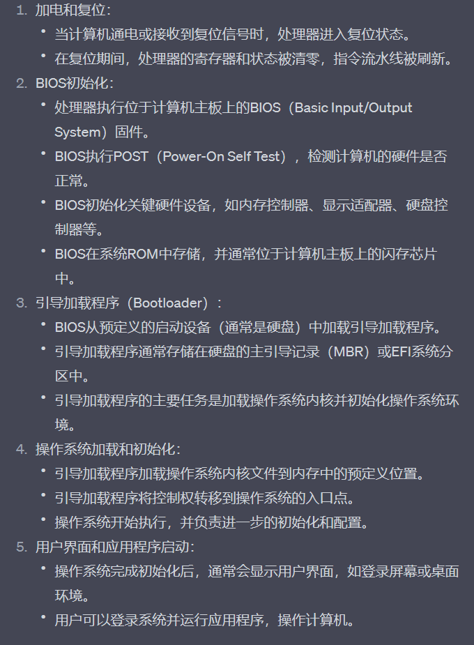
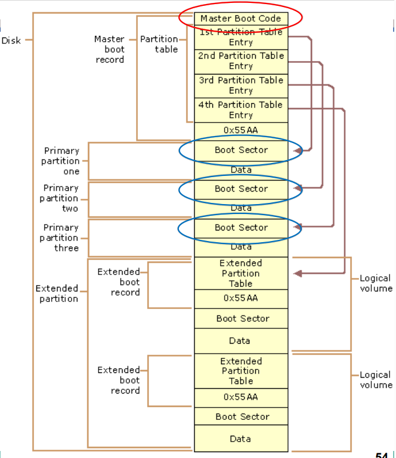

操作系统启动复习
MIPS
全流程图

（框选为流程中谁占有CPU）
文字注解
GPT解释

BootLoader
解释一
BootLoader是Booter和Loader的合写：
Booter要初始化系统硬件使之运行起来，至少是部分运行起来。
Loader将操作系统映像加载到内存中，并跳转到操作系统的代码运行。
解释二
BootLoader都分为stage1和stage2两大部分：
- 依赖于cpu体系结构的代码（如设备初始化代码等）通常都放在stage1且可以用汇编语言来实现；
 - stage2则通常用C语言来实现，这样可以实现复杂的功能，而且有更好的可读性和移植性；

将内核加载到内存也是在这一阶段完成的。
引导操作系统（Linux）
这一部分对应流程图中第二个方框，在BootLoader加载内核镜像到内存后，控制权交给操作系统，Bootloader结束工作，操作系统开始进行自初始化。
具体流程
一阶段

二阶段

总结
经历过流程图中的启动，在mips上的启动就已经完全完成了。
X86
全流程图

文字注解
GPT解释

GPT这里有点问题，就是BootLoader的位置，详情看注意事项。
BIOS
- BIOS进行关键硬件设备的初始化
- BIOS在主板ROM中存储
- BIOS中包含了CPU的相关信息、设备启动顺序信息、硬盘信息、内存信息、时钟信息、PnP特性等等
MBR
- 硬盘上第0磁头第0磁道第一个扇区被称为MBR，也就是Master Boot Record，即主引导记录，它的大小是512字节。
- MBR包含三部分内容，前446字节为启动代码和数据，后面为分区表，最后跟两个幻数标识这是MBR
BootLoader
Boot loader 也可以称之为操作系统内核加载器(OS kernel loader), 是操作系统内核运行之前运行的一段小程序。通过这段小程序，我们可以初始化硬件设备、建立内存空间的映射图，从而将系统的软硬件环境带到一个合适的状态，以便为最终调用操作系统内核做好一切准备。通常是严重地依赖于硬件而实现的。引导操作系统（Linux）
Linux启动的工作除体系结构相关部分外，其它都与MIPS几乎一样。
X86与MIPS启动对比
- MIPS没有BIOS，直接使用BootLoader启动；X86先经过BIOS,再使用BootLoader启动。（这一条很重要）。
- MIPS和X86的BootLoader略有区别，MIPS更定制化一些，X86由于已经有BIOS了，可能普适一些（这一条纯个人理解）。
- MIPS不存在MBR的概念，X86存在，且需要MBR。
- MBR存在于第0磁头第0磁道第一个扇区，而引导扇区Boot Sector（也叫分区引导记录（PBR））存在于每一个分区的第一个扇区。
- MBR不属于任何一个分区，所以不要纠结什么PBR和MBR重合的问题。
- X86里面有很多BootLoader，你可以认为MBR，PBR本身是BootLoader，也可以认为MBR有一个BootLoader，PBR又指向一个BootLoader（这个比较真），但以应试为准的话，就认为PBR指向的为BootLoader吧（这是王道的定义，即流程图的理解）

本博客所有文章除特别声明外，均采用 CC BY-NC-SA 4.0 许可协议。转载请注明来自 ForeverYolo的博客！
相关推荐


评论